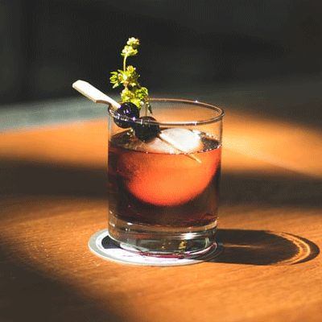
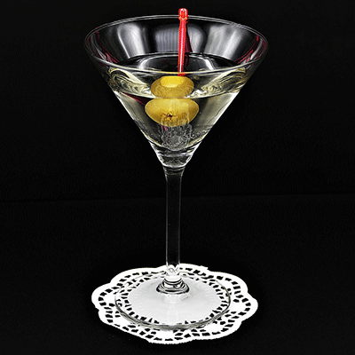
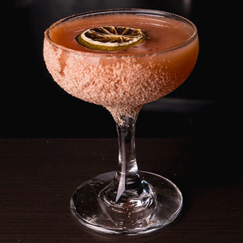
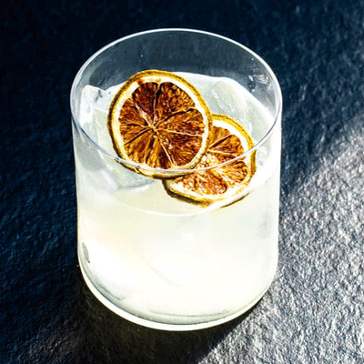

Bull Dog
Bull Dog

Gin Back
ジン・バック
ドライ・ジンをベースにレモンジュースとジンジャーエールを合わせた王道のカクテル。
甘く爽やかな口当たりが飲みやすく男性、女性、選ばず皆から好かれています。
誰からも人気で有名、そんな憎い彼の別名は"ロンドン・バック"

Martini
マティーニ
通称"カクテルの王様"
カクテル好きなら知らない人は居らず、これを頼めばバーテンダーの手腕が解るとも言われています。
では当店は如何程か？是非足をお運びになって、洗練されたその味を堪能してみて下さい。

Kahlua Chocolate
カルーアチョコレート
コーヒーリキュールとチョコレートリキュールをミルクでビルドした甘く美味しいカクテル
アルコールが苦手という方でも優しく飲める。少しだけ大人で贅沢なチョコレートの楽しみ方を知ってみませんか？

White Lady
ホワイト・レディ
白い貴婦人の名を冠したカクテルのルーツは、純白のウェディングドレスから。
ヴィクトリア女王に捧げられたと言われる美しきカクテルは、上品な味わいでなめらかに貴方の喉を滑っていくでしょう。
カクテルは千差万別。ジン、ウィスキー、ウォッカ。好きなお酒を好きに合わせ好きな作り方でご注文下さい。例えば？"ウォッカマティーニをステアせずにシェイクで────"